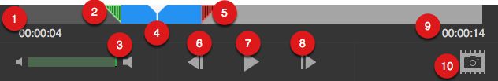

Preview a capture
Preview a capture
After taking a capture, Snagit automatically opens the capture in Snagit Editor.
After taking a capture, Snagit automatically opens the capture in Snagit Editor.
Image captures display at their actual size on the canvas. To zoom in or out on the canvas:
When the canvas is zoomed in to a high percentage the entire capture may not be visible. To view the hidden portion, hold the spacebar while dragging on the canvas.
The video capture preview is scaled to fit on the canvas. If you hover the cursor over the video on the canvas, the video playback controls appear.
